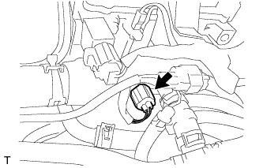

Cooling Fan System (2AZ-FE) Function Inspection |
| 1. Function Inspection When Cold (Coolant Temperature 83°C or Less) |
Check that the fan does not rotate when the ignition switch is turned ON with the A/C switch OFF.
Turn IG OFF.
 |
Disconnect the E.F.I. water temperature connector.
Check that the fan rotates when the ignition switch is turned ON.
| 2. Function Inspection When Hot (Coolant Temperature 96°C or More) |
After warming up the engine, check that the A/C switch is OFF.
Check that the fan starts rotating when the coolant temperature reaches 96°C or more, and stops when it falls to approximately 94.5°C or less.